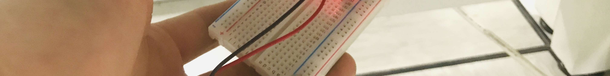

복구할 기능
빛
조도센서와 LED를 연결해 어두워지면 반응하는 무드등을 만들어요.
QR 코드를 찍고 바로 들어온 학생도 오늘의 목표를 쉽게 이해할 수 있도록, 배경과 할 일을 먼저 확인해요.
빛
하모니아 빛 구역은 어두워지면 스스로 빛나는 조명으로 가득했어요. 그런데 빛을 감지하는 장치가 멈추면서 구역이 어두워졌어요.
도도무드를 완성하고, 어둠에 반응하는 빛을 다시 켜 주세요.
조립 설명서와 영상을 먼저 확인하고 시작하면 중간에 덜 멈추고, 센서 연결도 더 쉬워져요.
설명서를 먼저 훑어보면 센서와 LED가 어디에 들어가는지 미리 알 수 있어요.
브레드보드 연결이 낯설다면 영상을 먼저 보고 따라 하는 것이 좋아요.
완성된 무드등이 어떻게 반응하는지 미리 보면 마지막 확인이 쉬워져요.
작은 전자 부품이 굴러가지 않게 책상 위를 먼저 정리해요.
건전지와 전선은 마지막에 연결할 거예요. 지금은 전원이 꺼져 있어야 해요.
브레드보드 구멍이 헷갈리면 혼자 억지로 하지 말고 바로 도움을 요청해요.
이 약속을 모두 확인해야 만들기 section이 열려요.
상자 안의 부품을 하나씩 확인하고 빠진 것이 없는지 체크해 주세요.
안전 약속을 끝내면 아래 만들기 흐름을 따라갈 수 있어요.
안전 section에서 체크를 모두 마치면 만들기 section이 열려요.
빛의 밝기를 감지하는 센서의 원리와 자동으로 반응하는 스마트 조명의 개념을 소개합니다.

입력(센서)과 출력(LED) 구조를 이해하고, 저항의 역할을 학습합니다.
설명서를 따라 조도센서와 LED를 연결하고, 프레임에 설치합니다.

완성된 무드등의 밝기 반응을 관찰하고, 실험 결과를 기록합니다.
학습 내용을 정리하고, 내 무드등을 소개합니다.
질문: 조도센서는 주변이 밝은지 어두운지 어떻게 알까요?
기본 키트만으로도 학습이 완결됩니다. 추가로 ChatGPT를 활용하면, 내 무드등에 어울리는 짧은 이야기나 메시지를 생성하고 꾸며 넣는 창작 활동이 가능합니다.
※ ChatGPT 미사용 시에도 직접 이야기를 써서 꾸미는 대안 활동이 제공됩니다.
ChatGPT 바로가기 →센서를 가렸을 때 불이 켜지는지 한 줄로 적어 봐요.
완성된 무드등의 앞모습과 불이 켜진 모습을 사진으로 남겨 봐요.
밝기 변화 실험에서 알게 된 점을 활동지나 메모에 짧게 적어 보세요.
공개용 조립 설명서가 연결되면 여기서 다시 볼 수 있어요.
정리 중공개용 조립 영상이 연결되면 헷갈리는 부분을 다시 볼 수 있어요.
정리 중완성 후 어떤 모습이 맞는지 비교할 수 있도록 여기에 모아둘 거예요.
정리 중